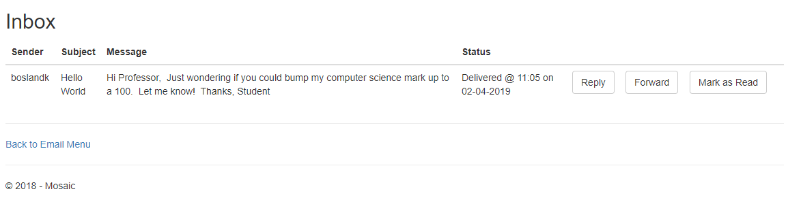
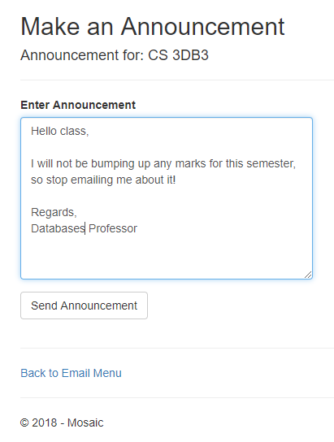

My work term at the Ontario Financing Authority involved working with a great deal of MVC web applications, maintaining them and
building new features from scratch. Therefore, I decided to get ahead of the game and play around with C# web applications and the
MVC app architecture. This meant setting up my local MySQL database, and get started with Visual Studio 2017. Mosaic is an application
that simulates a university environment manager, with seperate functions for both students and professors. A few of the features
include a secure login, a messaging system, class announcement feeds and class management.
Features
Secure Login
The first feature I implemented was a secure login system with client-side verification. The user's login information is checked
against a cached list of encrypted usernames and passwords, and if a match is found the field turns green and the user can login,
otherwise the field stays red. Client-side scripting and caching was used to reduce the number of calls to the SQL database, as well
as improve efficiency. The user also recieves an alert with a detailed error report on what went wrong with the login. Finally, the
system also has a change password option, where users can sign in with their old credentials, and add a new password. New students and professors are also able to create new accounts to interact with the system, set their credentials
and proceed to the login. These processes use the same verification as the login system.
Class Management
Another feature that was key to our application was the class management aspect. Students are able to enroll in classes, check class
availability and drop classes. Professors are able to enroll to teach a class, view availability and drop teaching a class.
Here we have more client-side scripting, that follows the same theme for displaying errors as the login system. Both students and professors
can only enroll in valid classes, and drop classes that they are already taking. Below is an example of the UI for class
management.
Email System
I also implemented a secure email system for the students and professors. Through the database, the students and professors can send emails, reply
directly to emails, forward emails and mark emails as read. They can check their inboxes and outboxes, as well as their contact list of
all other students or professors currently enrolled at the school. These interactions all happen through the database, with client-side scripting to
catch errors when sending emails, such as incorrect usernames. Below are a few examples of the UI for the email system.


Architecture
I utilized a 5-tier architecture when designing this application, which consisted of: A Service Layer, Repository Layer, UI Layer, Model Layer and a Logic Layer.
This made is much easier to maintain the abstraction of my program, and also maintain a seperation of concerns between the
modules. For example, the serivce layer handled verification, the repository layer handles database interactions through LINQ, and the model layer stores object data.
The process for performing user actions was:
Recieve user input through the UI Layer (Views)
Process user input in Logic Layer (Controllers)
Ensure user input is valid in Service Layer (Services)
Store user input in Model Layer (Models)
Interact with the database and perform CRUD operations with the data through Repository Layer (Repositories)
For the design of the application, I tried to keep it as simple as possible to increase usability for a variety of users.